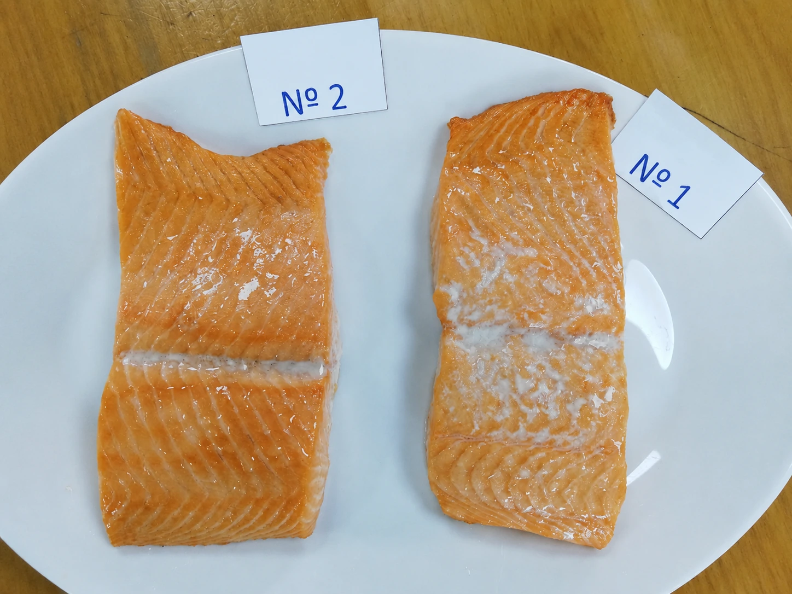
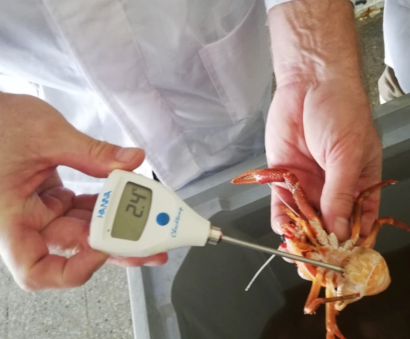
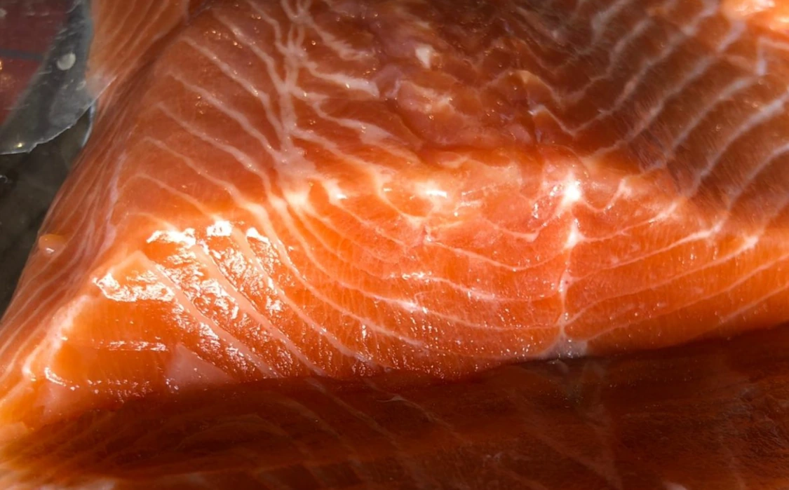
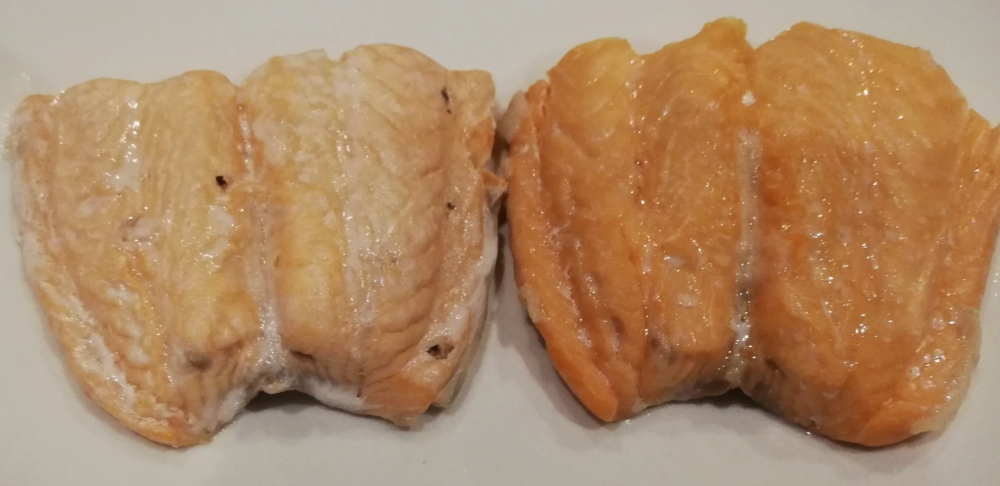
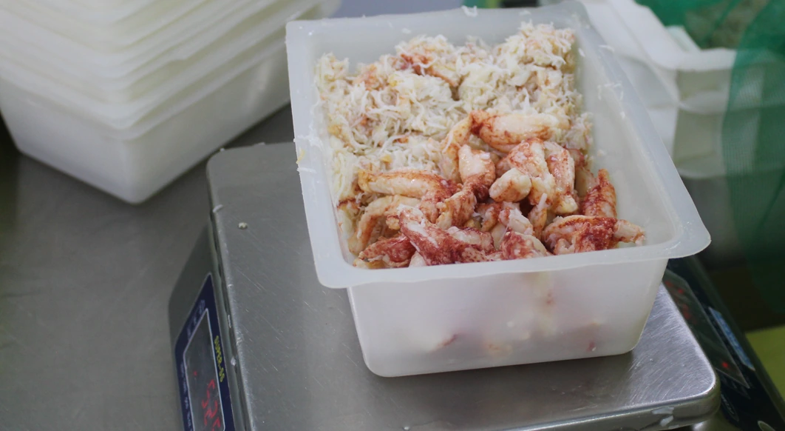
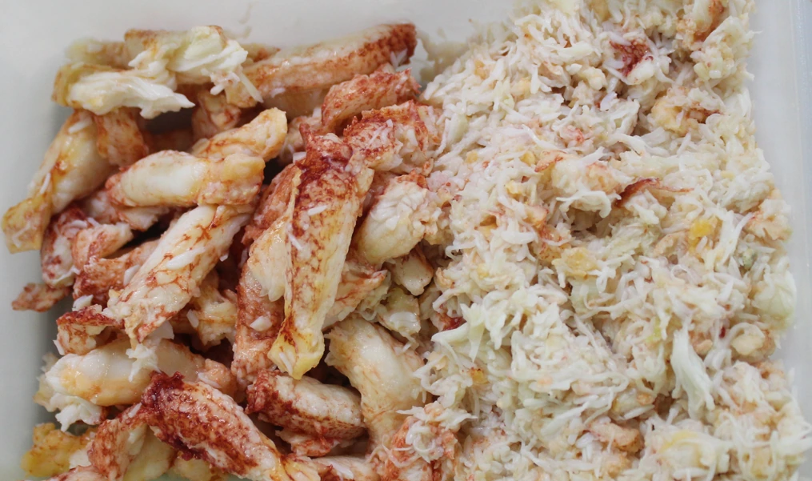
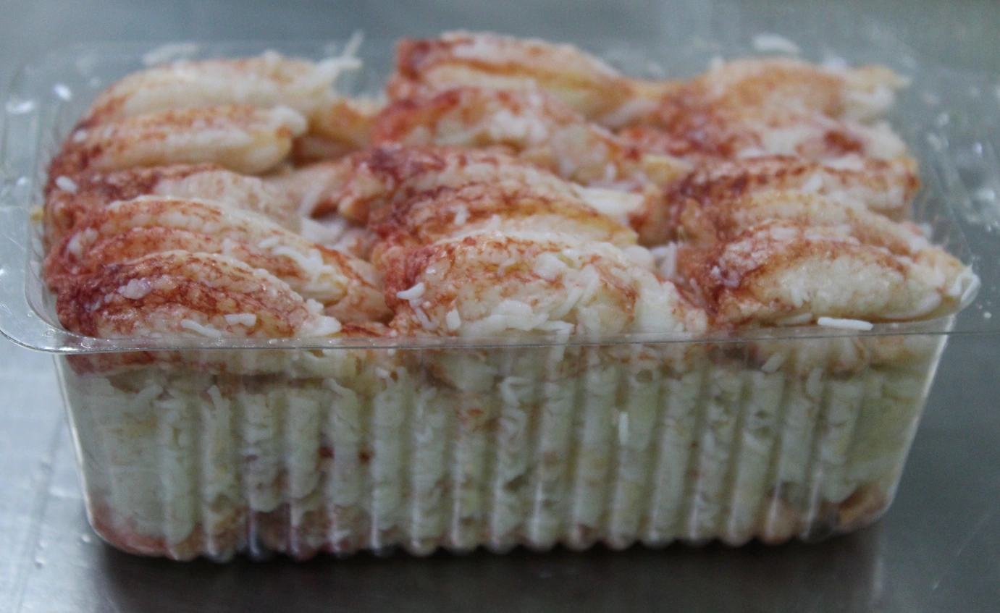

Rendimiento, textura y estabilidad
ANPEIX 100 PLUS SP
Coadyuvante tecnológico para peces, crustáceos y productos del mar. Su uso se orienta a estabilizar estructura, reducir pérdida de líquidos propios y mejorar consistencia final.
Aplicación habitualInmersión o según materia prima
CONCENTRACIÓN DE USODesde 2% a 3%, según matriz
Variables a medirRendimiento, drip, textura, cocción
PRODUCTOSSalmón, centolla, centollón, langostino y otros mariscos
2–5%mejoras reportadas según matriz y condición
2–5 °Ctemperatura operacional recomendada en baño
Etiquetadoal ser un coadyuvante de elaboración, no se etiqueta






